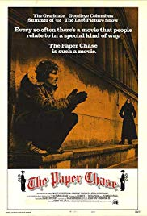
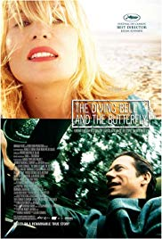
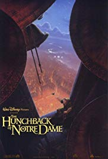
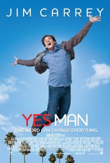

A first-year law student at Harvard Law School struggles with balancing his coursework and his relationship with the daughter of his sternest professor.

The true story of Elle editor Jean-Dominique Bauby who suffers a stroke and has to live with an almost totally paralyzed body; only his left eye isn't paralyzed.

A deformed bell-ringer must assert his independence from a vicious government minister in order to help his friend, a gypsy dancer.

A man challenges himself to say "yes" to everything for an entire year.
